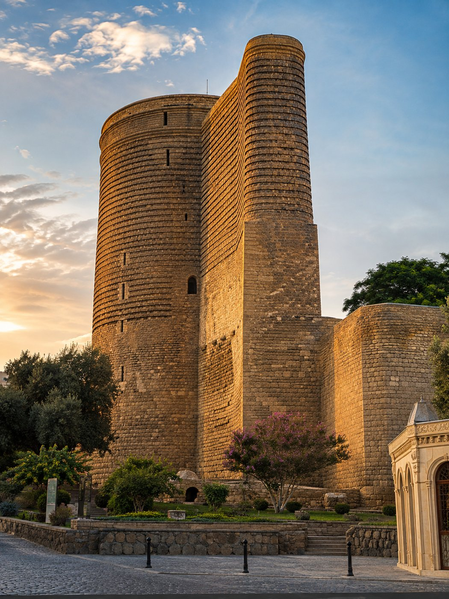
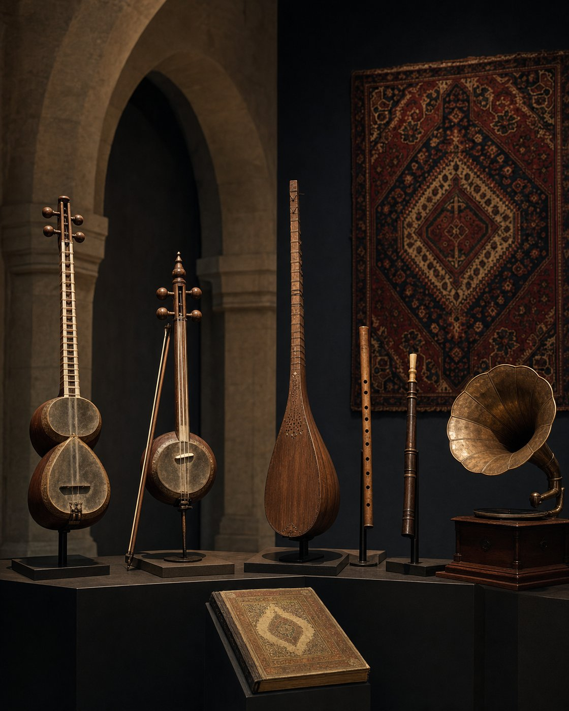
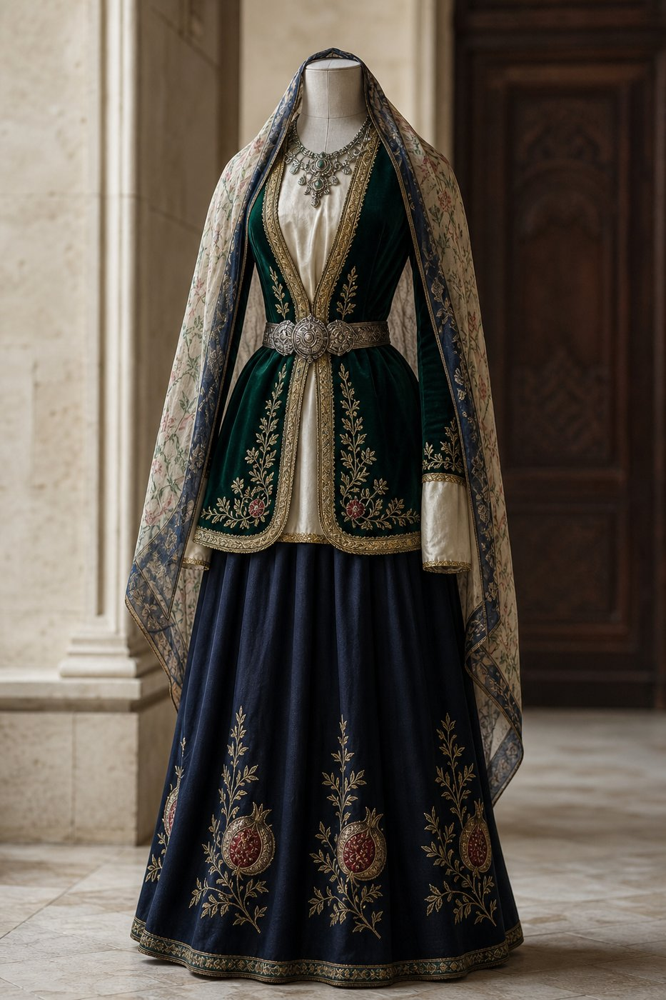
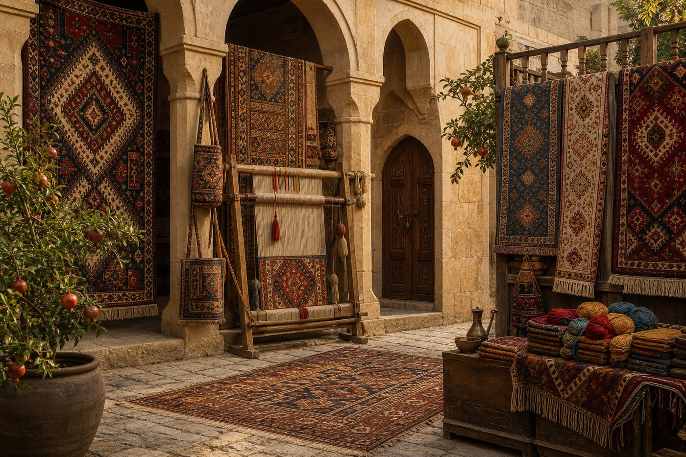
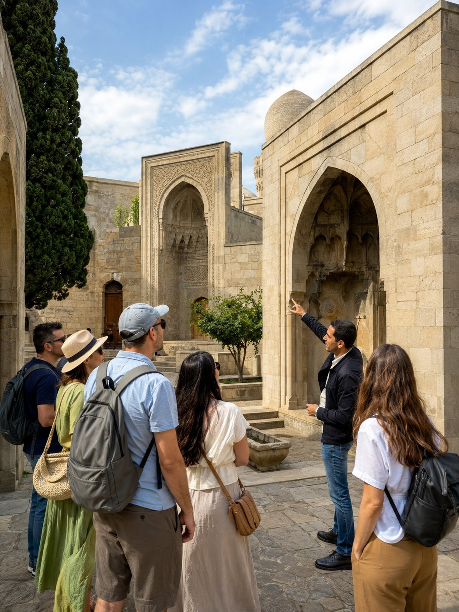
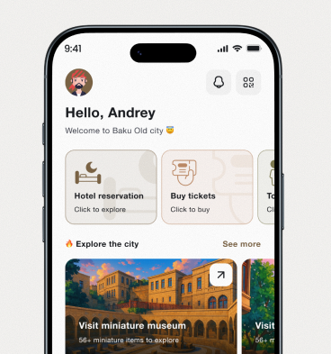

What would you
like to explore?
You have no idea what
to do in Icherisheher?
Where History Still Lives
Icherisheher is Baku’s historic heart, surrounded by ancient walls and listed as a UNESCO World Heritage Site since 2000. Home to landmarks like the Maiden Tower and Shirvanshah’s Palace, the Old City remains a living neighborhood with more than 3,000 residents.





Pick how you travel and follow a mapped route through the Old City - every stop links to tickets, hours and directions.
Your personal Old City guide in your pocket - works offline, includes audio guides in 6 languages, AR Time Machine at 10+ historical points, and exclusive in-app deals.

Travel back to 12th-century Baku through augmented reality at 10 historical points across the Old City.